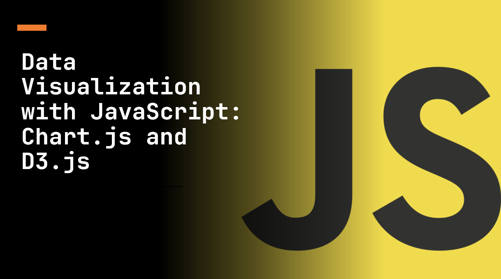

Introduction​
Data visualization breathes life into raw data, allowing us to uncover insights and patterns. JavaScript offers powerful libraries like Chart.js and D3.js to create interactive and captivating charts, graphs, and visual representations.
In this article, we'll deive into these libraries, highlighting their capabilities, and demonstrating how to craft engaging visualizations that effectively communicate your data.
Suggested Tutorials 📑:​
Let's get started!
Chart.js is a popular JavaScript library for creating interactive charts and graphs. It's easy to use and offers a wide range of chart types, including line, bar, pie, radar, and more.
Chart.js is open-source and free to use. It's also lightweight, weighing in at just 11kb when minified and gzipped.
Key Features of Chart.js​
Chart.js offers a wide range of features, including:
- Responsive: Chart.js charts are responsive by default. They'll automatically resize to fit the parent container.
- Interactive: Charts are interactive and respond to user interactions like clicks and hovers.
- Customizable: Charts can be customized with a wide range of options, including colors, fonts, and more.
- Cross-browser compatible: Chart.js supports all modern browsers, including Chrome, Firefox, Safari, and Edge.
- Multiple chart types: Chart.js supports a wide range of chart types, including line, bar, pie, radar, and more.
1.1. Getting Started with Chart.js​
To get started with Chart.js, you'll need to include the Chart.js library in your project. You can do this by downloading the library from the Chart.js website or by using a CDN.
For example, to use the CDN, you can include the following script tag in your HTML file:
<script src="https://cdn.jsdelivr.net/npm/chart.js"></script>
Once you've included the Chart.js library, you can create a chart by creating a canvas element and initializing a new Chart object.
For example, to create a line chart, you can use the following code:
<canvas id="myChart"></canvas>
<script>
const ctx = document.getElementById('myChart').getContext('2d');
const myChart = new Chart(ctx, {
type: 'line',
data: {
labels: ['January', 'February', 'March', 'April', 'May', 'June', 'July'],
datasets: [
{
label: 'My First Dataset',
data: [65, 59, 80, 81, 56, 55, 40],
fill: false,
borderColor: 'rgb(75, 192, 192)',
tension: 0.1,
},
],
},
});
</script>
In the above example:
- We create a canvas element with the id
myChart. We then use the getContext() method to get the canvas context and initialize a new Chart object. - The Chart object takes two arguments: the canvas context and a configuration object. The configuration object contains the chart type, data, and options.
Suggested Tutorials 📑:​
1.2. Chart Types​
Chart.js supports a wide range of chart types, including line, bar, pie, radar, and more.
For creating different types of charts, you can use the type property in the configuration object.
For example:
const myChart = new Chart(ctx, {
type: 'line',
});
D3.js (Data-Driven Documents) is a versatile and powerful library that provides fine-grained control over data visualization. It uses a declarative approach, binding data to a Document Object Model (DOM) and manipulating the DOM based on that data.
Key Features of D3.js​
D3.js offers a wide range of features, including:
- Data-driven: D3.js is data-driven. It allows you to bind arbitrary data to a Document Object Model (DOM) and manipulate the DOM based on that data.
- Declarative: D3.js uses a declarative approach. It allows you to create visualizations by specifying what you want to achieve, rather than how you want to achieve it.
- Data transformations: D3.js provides a wide range of data transformations, including filtering, sorting, grouping, and more.
- Transation animations: D3.js provides a wide range of transition animations, including fades, slides, and more.
2.1. Getting Started with D3.js​
To get started with D3.js, you'll need to include the D3.js library in your project. You can do this by downloading the library from the D3.js website or by using a CDN.
For example, to use the CDN, you can include the following script tag in your HTML file:
<script src="https://d3js.org/d3.v7.min.js"></script>
Once you've included the D3.js library, you can create a chart by creating a container element and binding data to it.
For example, to create a bar chart, you can use the following code:
<div id="chart"></div>
<script>
const data = [4, 8, 15, 16, 23, 42];
const x = d3.scaleLinear().domain([0, d3.max(data)]).range([0, 420]);
d3.select('#chart')
.selectAll('div')
.data(data)
.enter()
.append('div')
.style('width', (d) => `${x(d)}px`)
.text((d) => d);
</script>
In the above example:
- We create a container element with the id
chart. We then use the selectAll() method to select all div elements in the container and bind data to them. - The
data() method takes an array of data and binds it to the selected elements. The enter() method creates placeholders for any data that doesn't have a corresponding element. - The
append() method appends a div element for each data item. The style() method sets the width of each div element based on the data value. The text() method sets the text content of each div element based on the data value.
2.2. Chart Types​
D3.js supports a wide range of chart types, including line, bar, pie, radar, and more.
Suggested Tutorials 📑:​
Choosing the Right Library​
Both Chart.js and D3.js are powerful libraries for creating interactive charts and graphs. They both offer a wide range of features and support a wide range of chart types.
Chart.js is easy to use and offers a wide range of chart types. It's a good choice for creating simple charts and graphs.
D3.js is more complex and offers more fine-grained control over data visualization. It's a good choice for creating complex charts and graphs.
Conclusion​
In this article, we've explored Chart.js and D3.js, two powerful libraries for creating interactive charts and graphs. We've highlighted their capabilities and demonstrated how to craft engaging visualizations that effectively communicate your data.
We hope you found this article useful.
Happy coding! 🎉
Suggested Tutorials 📑:​